Misión
Formar profesionales con habilidades técnicas, liderazgo y sentido ético, acercando IEEE a los estudiantes de la UDB.
Somos estudiantes de ingeniería y tecnologías de la información que organizan talleres, competencias y eventos para acercar la ingeniería a todo el campus. Aquí conocerás quiénes somos, qué hacemos y cómo nos va en números.
IEEE UDB es la rama estudiantil del Instituto de Ingenieros Eléctricos y Electrónicos (IEEE) en la Universidad Don Bosco. Existimos para que los estudiantes vivan la ingeniería fuera del aula.
Formar profesionales con habilidades técnicas, liderazgo y sentido ético, acercando IEEE a los estudiantes de la UDB.
Ser la rama estudiantil referente de innovación y comunidad técnica del país, reconocida por su impacto en la sociedad.
Colaboración, excelencia técnica, inclusión y servicio. Todo lo que hacemos lo hacemos con y para la comunidad.
La idea es que cada capítulo tenga su propia directiva y sus actividades, pero que todos se integren mediante la Rama Estudiantil.
Coordinación general de todos los capítulos.
Directiva propia y actividades técnicas de su área.
“IEEE no es solo una organización; es una comunidad que transforma conocimiento en ideas, ideas en innovación y voluntarios en líderes que construyen el futuro.”
— Junta directiva 2026“IEEE UDB impulsa la innovación, el liderazgo y el desarrollo profesional en tecnología, para los futuros ingenieros.”
— Kevin Sanchéz“IEEE UDB conecta a estudiantes con la tecnología, la investigación y el liderazgo que están transformando la ingeniería.”
— Cristian Rosales“IEEE UDB transforma la teoría en impacto real, formando líderes apasionados por la tecnología, la innovación y el trabajo en equipo.”
— Josue GonzalézProgramamos experiencias para que cualquier estudiante, sin importar su semestre, pueda participar y aprender.


Programación, electrónica, impresión 3D, inteligencia artificial y ciberseguridad, dictados por miembros y invitados.
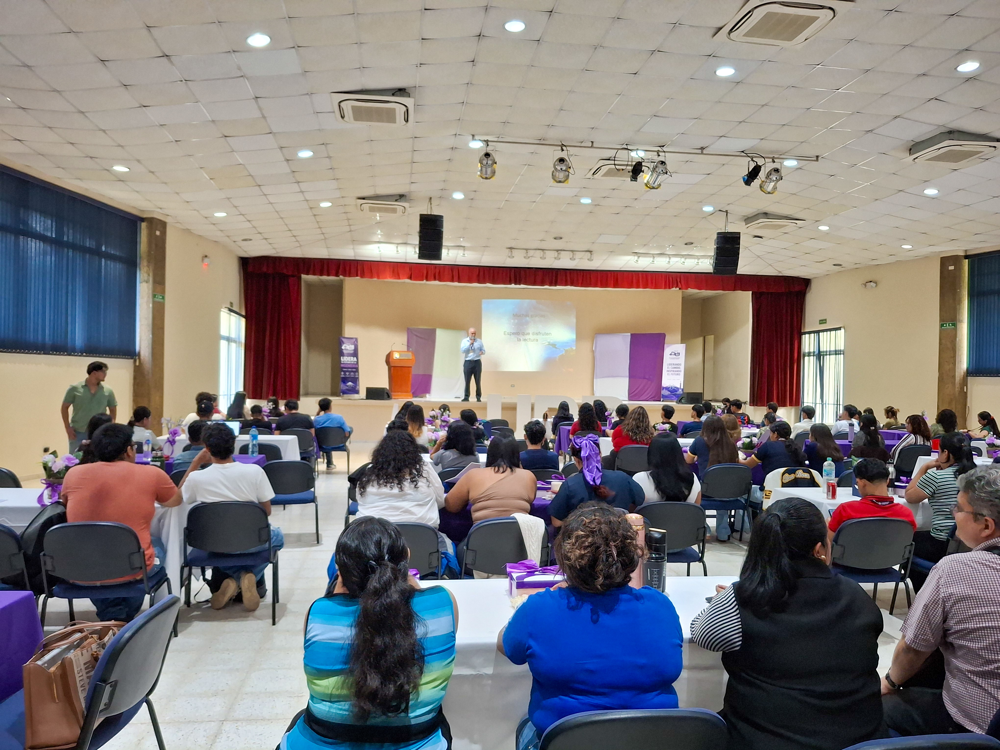
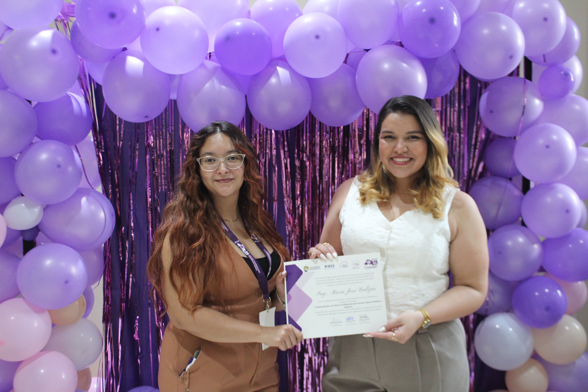
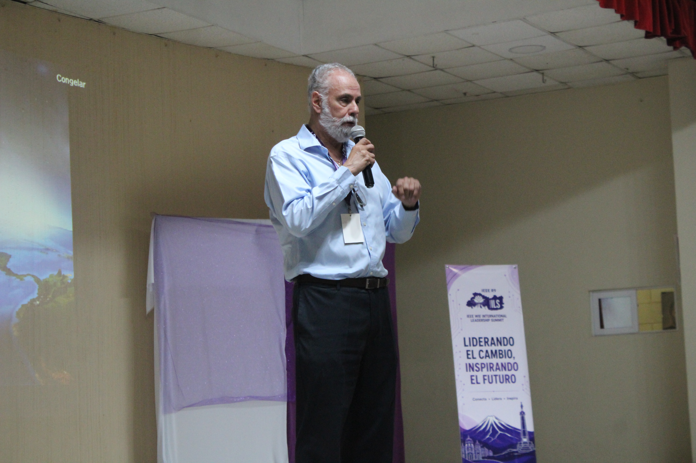
Ponencias con profesionales e investigadores que conectan lo académico con la industria real.

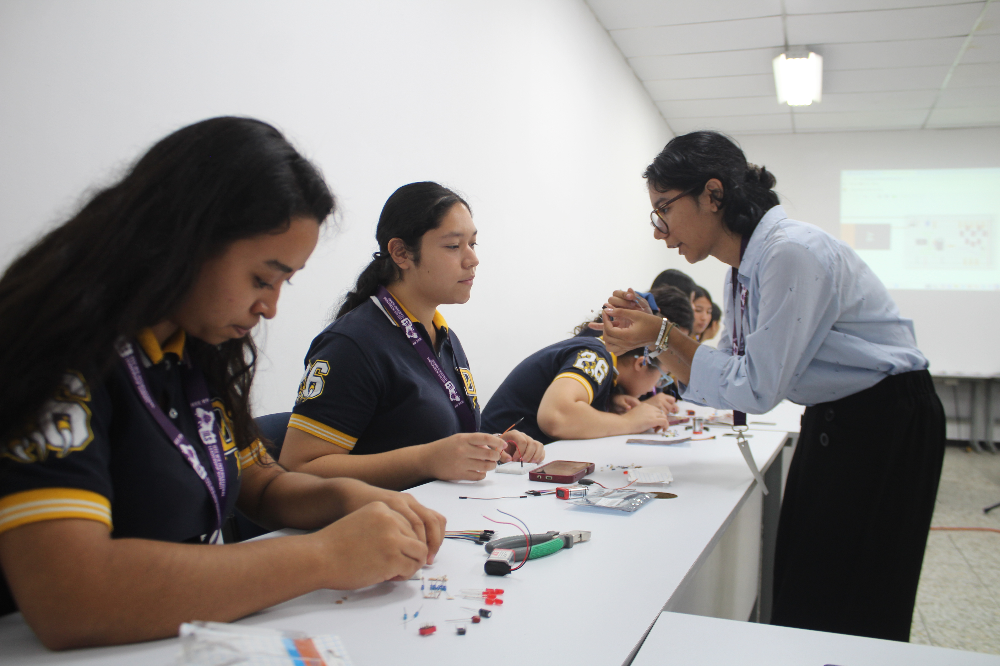
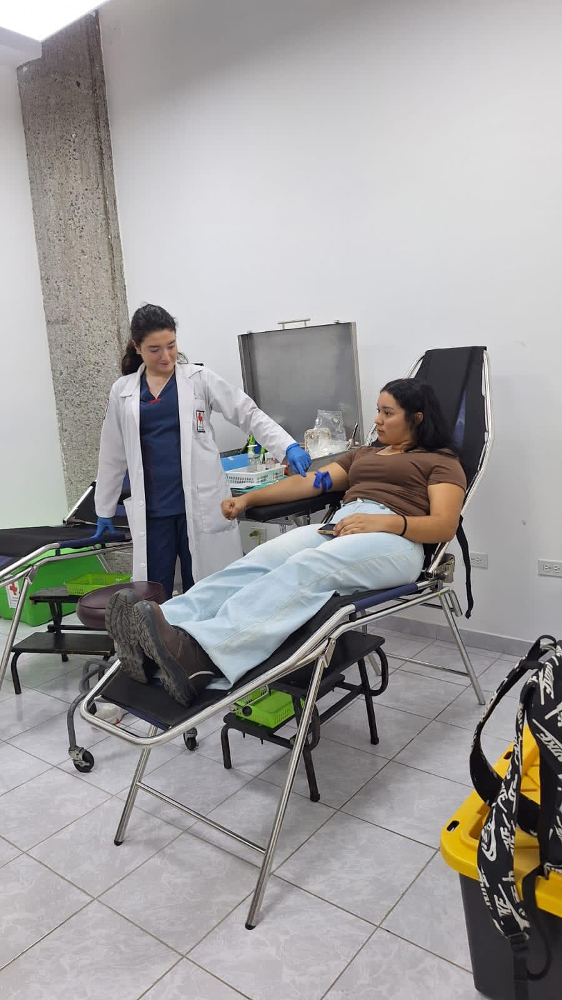
Divulgación en colegios, jornadas de orientación tecnológica y actividades de impacto social.


Recorridos a empresas como AEROMAN, ARBEX, PROMAQ e Nipro Medical para ver de primera mano cómo funciona la ingeniería en la industria real.
La Technical Week de IEEE UDB es una semana dedicada a la tecnología, la innovación y el aprendizaje, donde los diferentes capítulos y grupos de afinidad de la Rama Estudiantil se unen para compartir conocimientos, desarrollar habilidades y conectar a los estudiantes con profesionales de la industria.
A través de conferencias, talleres, demostraciones, visitas técnicas, actividades prácticas y espacios de integración, la Technical Week busca acercar a los estudiantes a las tendencias actuales de la ingeniería y motivarlos a convertir sus conocimientos en soluciones para el futuro.
Una semana, muchas disciplinas, una misma visión: aprender, conectar e innovar para transformar el futuroUna semana de innovación, aprendizaje y conexión, donde los capítulos IEEE comparten conocimientos, experiencias y tecnología para inspirar a la próxima generación de ingenieros.
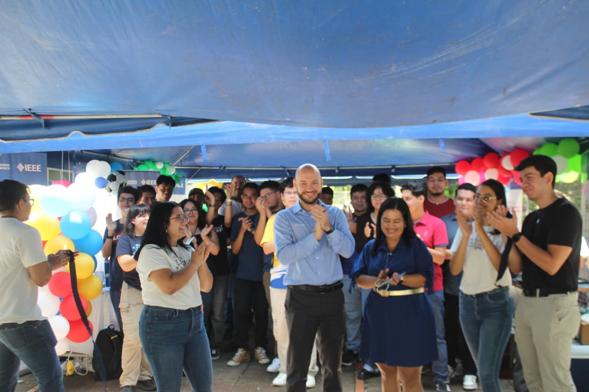

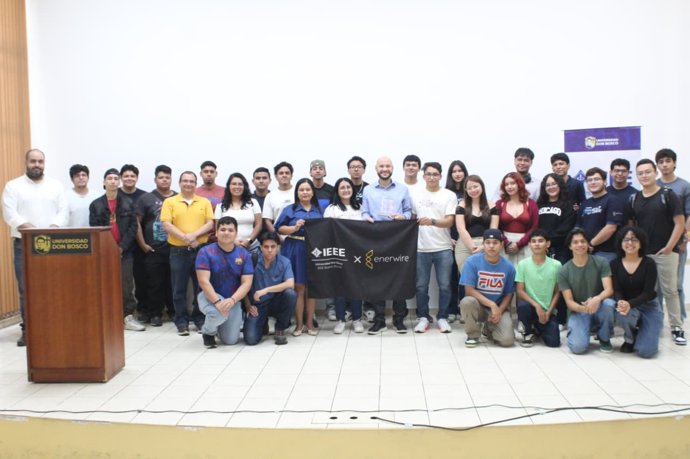
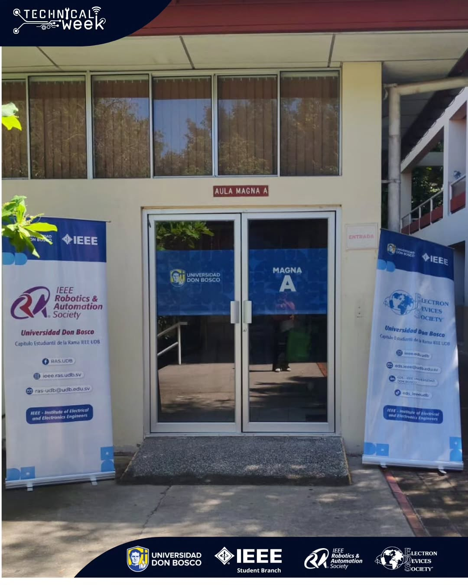
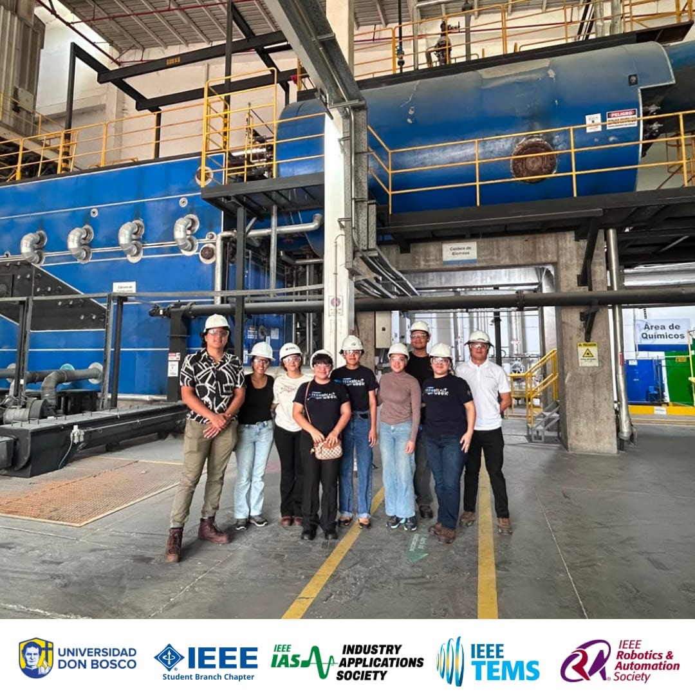
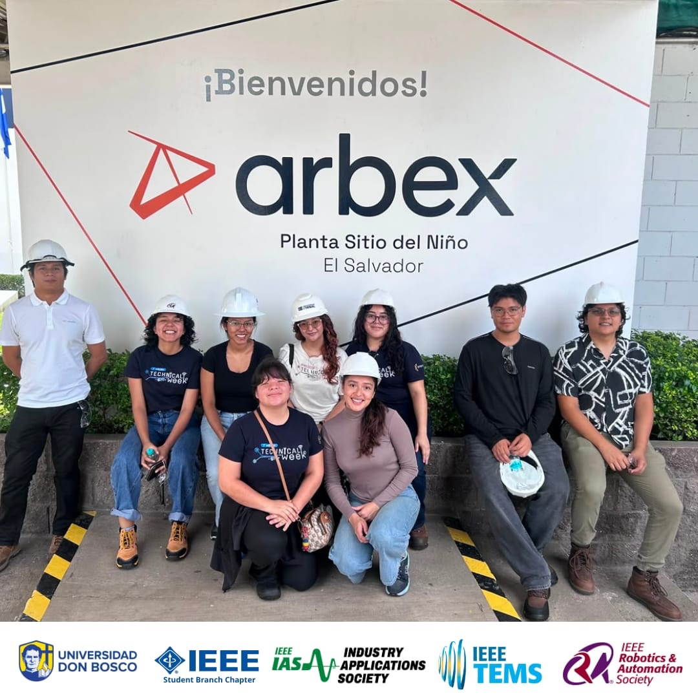
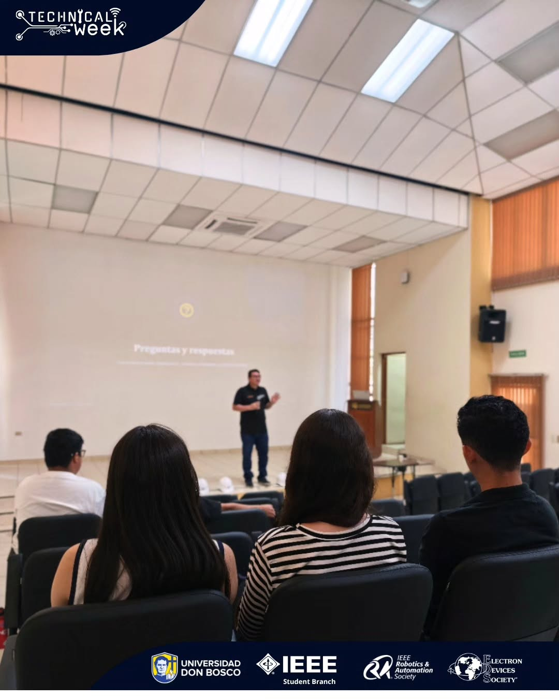
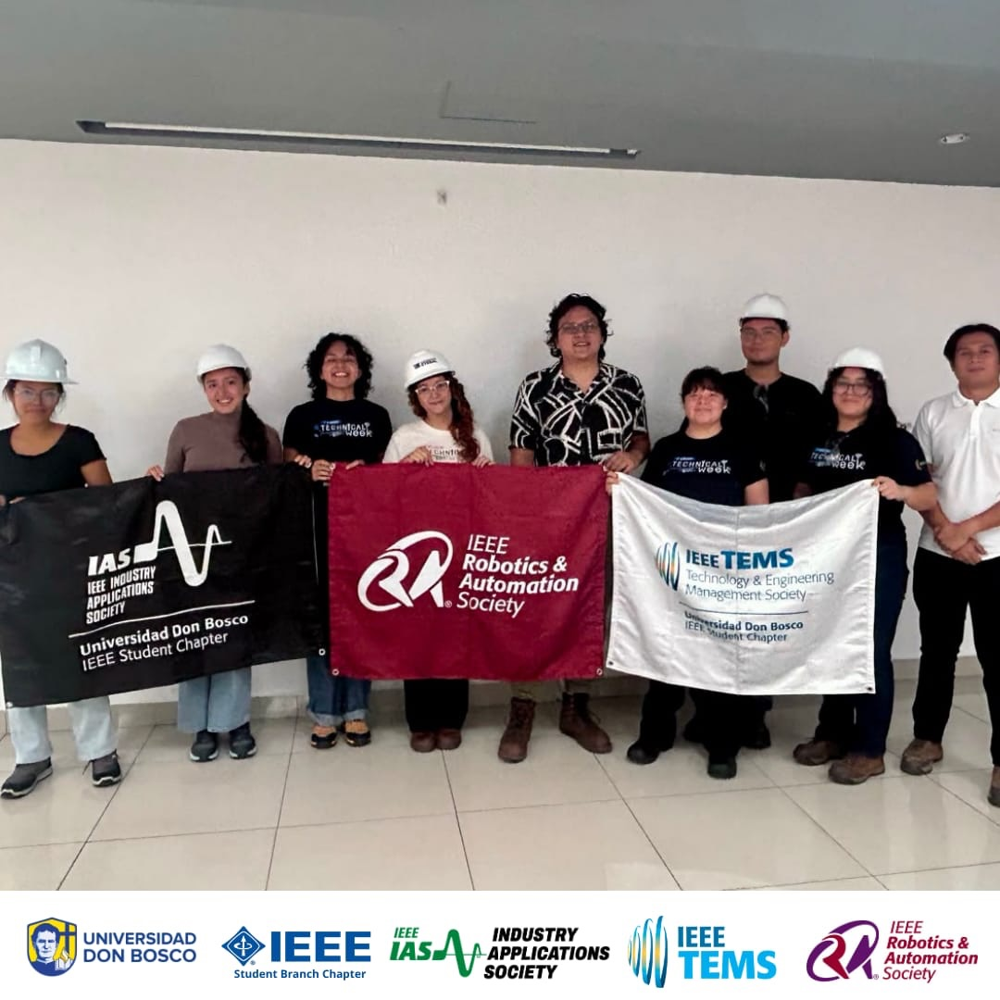
Un vistazo a lo que vivimos durante los 7 días de Technical Week en el campus.
| Society | Actividades | Miembros |
|---|
Lo que viene en la Rama IEEE UDB: nuevos programas para participar, aprender y crecer.
Actividad de voluntariado donde los estudiantes utilizan sus conocimientos para apoyar una comunidad.
Limpieza de espacios naturales, reciclaje, reforestación y educación ambiental.
Llevar experimentos, robótica, electricidad y electrónica a niños de escuelas.
Visitas a empresas, laboratorios, plantas industriales y centros tecnológicos.
Conversaciones informales con ingenieros y profesionales de diferentes áreas.
Noche de reconocimiento para voluntarios, capítulos, proyectos y miembros destacados.
Competencia amistosa entre capítulos con retos deportivos, tecnológicos, culturales y de conocimiento.
Conectar estudiantes de primeros años con estudiantes avanzados, egresados o profesionales.
Qué queremos hacer mejor como rama estudiantil: seis líneas de trabajo para el próximo ciclo.
Contenido constante en redes: resultados de actividades, tips técnicos y convocatorias que mantengan visible a la Rama y atraigan nuevos miembros.
Una ruta de aprendizaje con talleres cortos y badges IEEE para elevar el nivel técnico de los miembros durante todo el ciclo.
Ampliar la red de aliados y patrocinios para conseguir más conferencistas, visitas técnicas y oportunidades de prácticas.
Sostener al menos un proyecto de ingeniería para el bien social por ciclo, con objetivos y beneficiarios bien medidos.
Seguimiento real a los afiliados IEEE: mentorship, renovaciones y participación en actividades de la región.
Indicadores claros asistencia, satisfacción y afiliados nuevos revisados al cierre de cada actividad y cada semestre.